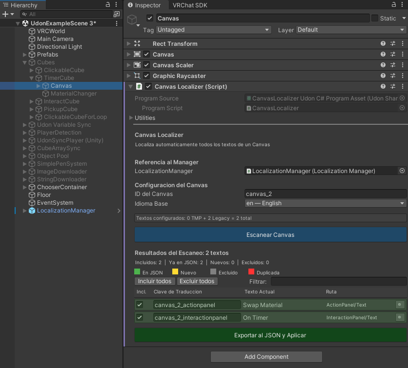

LocalizationManager
Componente central que gestiona traducciones, deteccion de idioma y notificacion a localizadores
Descripcion
LocalizationManager es el nucleo del sistema de localizacion. Solo necesitas uno por escena. Se encarga de:
- Cargar y parsear el archivo JSON de traducciones
- Detectar automaticamente el idioma del jugador
- Cachear diccionarios para acceso rapido O(1)
- Notificar a todos los CanvasLocalizer y TextLocalizer cuando cambia el idioma
- Notificar a scripts externos via sistema de listeners
- Gestionar el dropdown de seleccion de idioma
Interfaz del Inspector

Configuracion Principal
| Propiedad | Tipo | Descripcion |
|---|---|---|
translationFile |
TextAsset | Archivo JSON con todas las traducciones. Se asigna automaticamente al usar la Configuracion Rapida. |
fallbackLanguage |
string | Codigo del idioma fallback (ej: "en", "es"). Se usa cuando el idioma del jugador no esta disponible. |
localizers |
TextLocalizer[] | Array de TextLocalizer registrados. Se llena automaticamente al escanear. |
canvasLocalizers |
CanvasLocalizer[] | Array de CanvasLocalizer registrados. Se llena automaticamente al escanear. |
_languageDropdown |
TMP_Dropdown | Dropdown opcional para que el jugador cambie idioma manualmente en el mundo. |
_dropdownLanguageCodes |
string[] | Codigos de idioma que corresponden a cada opcion del dropdown (misma posicion). |
_listeners |
UdonSharpBehaviour[] | Scripts externos que reciben el evento _OnLanguageChanged cuando cambia el idioma. |
Deteccion Automatica de Idioma
Al iniciar, el sistema detecta automaticamente el idioma del jugador usando una cascada de 4 niveles. Si un nivel falla, pasa al siguiente:
Nivel 1: API de VRChat
Usa VRCPlayerApi.GetCurrentLanguage() para obtener el idioma configurado por el jugador en VRChat. Es el metodo mas fiable y directo.
Nivel 2: Variantes de idioma
Si el codigo incluye variante regional (ej: "es-CL"), intenta con el codigo base ("es"). Esto permite detectar variantes que no estan explicitamente en el JSON.
Nivel 3: Zona horaria
Si no se detecta via API, mapea la zona horaria del sistema al idioma mas probable. Soporta 200+ zonas horarias en ambos formatos (Windows y IANA):
| Zona horaria | Formato IANA | Idioma |
|---|---|---|
| Tokyo Standard Time | Asia/Tokyo | ja (japones) |
| China Standard Time | Asia/Shanghai | zh-CN (chino simplificado) |
| Korea Standard Time | Asia/Seoul | ko (coreano) |
| Romance Standard Time | Europe/Madrid | es (español) |
| W. Europe Standard Time | Europe/Berlin | de (aleman) |
| Russian Standard Time | Europe/Moscow | ru (ruso) |
| E. South America Time | America/Sao_Paulo | pt-BR (portugues) |
| Romance Standard Time | Europe/Paris | fr (frances) |
Asia/Tokyo). En PC usan formato Windows (Tokyo Standard Time). El sistema soporta ambos formatos automaticamente.
Nivel 4: Fallback
Si ninguno de los metodos anteriores funciona, usa el idioma fallback configurado en el inspector. Si ese idioma tampoco existe en el JSON, usa el primer idioma disponible.
Idiomas Soportados
| Codigo | Nombre nativo | Nombre latin |
|---|---|---|
en | English | English |
es | Español | Espanol |
ja | 日本語 | Japanese |
ko | 한국어 | Korean |
zh-CN | 中文 (简体) | Chinese Simplified |
zh-TW | 中文 (繁體) | Chinese Traditional |
ru | Русский | Russian |
pt-BR | Português | Portuguese |
fr | Français | French |
de | Deutsch | German |
ca | Català | Catalan |
Metodos Publicos
| Metodo | Retorno | Descripcion |
|---|---|---|
GetValue(string key) |
string | Obtiene la traduccion de una clave. Busca en: idioma actual → fallback → otros idiomas → devuelve [key]. |
GetPluralValue(string key, int count) |
string | Traduccion con pluralizacion. Busca {key}_zero, {key}_one, {key}_other. Reemplaza {n} con count. |
SetLanguage(string lang) |
void | Cambia el idioma activo. Recachea diccionarios y notifica a todos los localizadores y listeners. |
GetCurrentLanguage() |
string | Devuelve el codigo del idioma activo (ej: "es"). |
GetAvailableLanguages() |
string[] | Array con los codigos de todos los idiomas disponibles en el JSON. |
HasLanguage(string code) |
bool | Comprueba si un idioma existe en el JSON. |
IsReady() |
bool | Devuelve true si el manager esta inicializado y listo. |
RegisterListener(UdonSharpBehaviour) |
void | Registra un script externo para recibir _OnLanguageChanged. |
RegisterLocalizer(TextLocalizer) |
void | Registra un TextLocalizer en runtime. |
RegisterCanvasLocalizer(CanvasLocalizer) |
void | Registra un CanvasLocalizer en runtime. |
Metodos de Cambio de Idioma (sin parametros)
Estos metodos existen porque SendCustomEvent de VRChat no soporta parametros. Son ideales para conectar botones de UI que cambien el idioma con un solo clic.
| Metodo | Idioma |
|---|---|
SetLanguageAuto() | Deteccion automatica |
SetLanguageEnglish() | en — English |
SetLanguageSpanish() | es — Español |
SetLanguageJapanese() | ja — 日本語 |
SetLanguageKorean() | ko — 한국어 |
SetLanguageChineseSimplified() | zh-CN — 中文 (简体) |
SetLanguageChineseTraditional() | zh-TW — 中文 (繁體) |
SetLanguageRussian() | ru — Русский |
SetLanguagePortuguese() | pt-BR — Português |
SetLanguageFrench() | fr — Français |
SetLanguageGerman() | de — Deutsch |
SetLanguageCatalan() | ca — Català |
SendCustomEvent en Udon. Por ejemplo, un boton que llame SetLanguageJapanese en el LocalizationManager cambiara el idioma a japones.
Configuracion del Dropdown
El prefab incluye un dropdown TMP para que el jugador cambie idioma manualmente. Tambien puedes configurar tu propio dropdown:

"en".